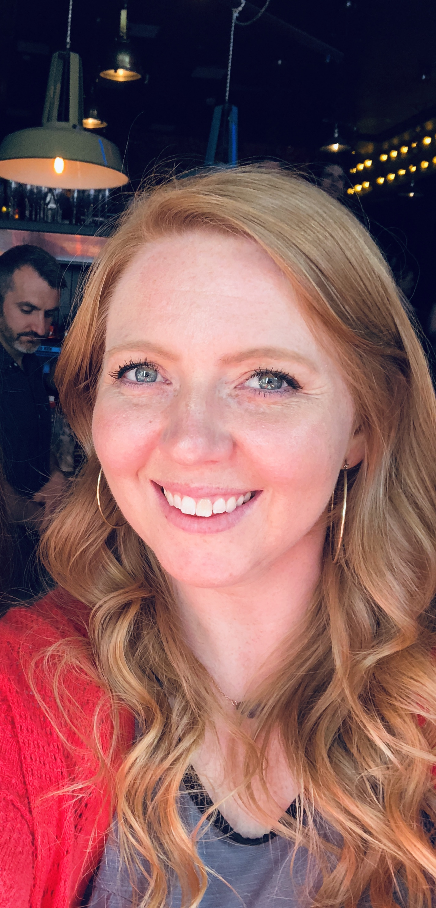

About me
This is the story of girl, who tried at coding and drowned in that world. That girl's name is Kala Elam, and that's me. At 32, for reasons we won't get into, I would assume a small stroke or temporary loss of sanity, the genius that I am decided to switch careers again, for the third time. Which is how I found myself entering into the world of web development. To say it is stressful and intimidating is a given, but it's also fun and thrilling and rewarding.
Many moons ago, I graduated from Texas Christian University with my bachelors degree in Speech Pathology and immediately started working as a pediatric Speech Therapist. That same year I found yoga and felt joy for the first time in my life, and after two years of blood, sweat, pulled muscles, and some zen, I became a certified yoga instructor.
It didn't take long for me to crave a new thrill in my life, and loving to travel, but hating to fly, I decided to become a Flight Attendant. I learned to love flying but knew that it was a temporary hiatus from real life, and bonus, avoiding the marriage and baby lectures from friends and family. After two years in the hedonistic airline industry, I knew it was time to leave with the shredded remains of my soul. And so ends the tale of how I ended up in the SMU web development bootcamp, trying to make my brain function again after years of sleeplessness and alcohol abuse.